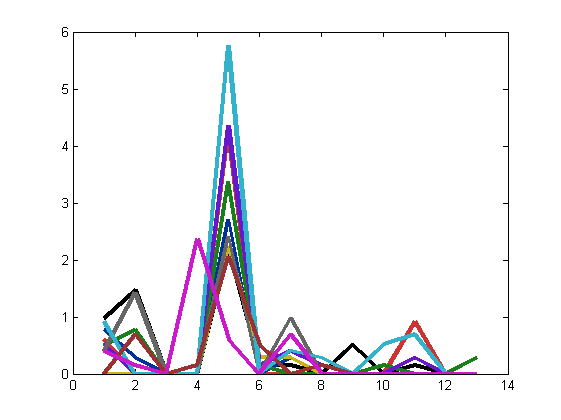
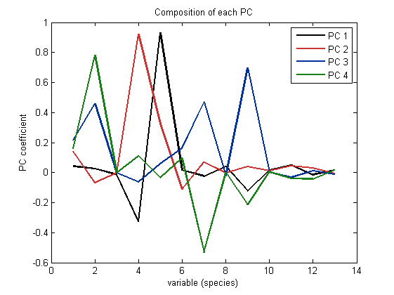
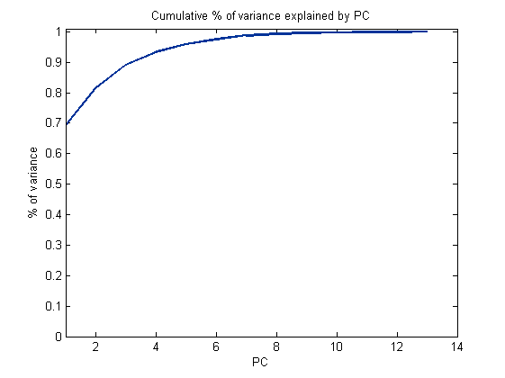
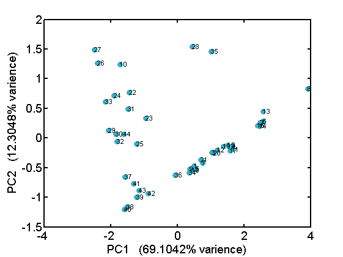

X_PCA : how to do PCA in matlab
This is an example file for PCA, how it works and how to make plots.
Use my Iva insect data [X_community]. Even though for the particular data set PCA may not be the best thing to do.
required functions: [myplot]
by Wei-Ting Lin, 2014/10/10
Contents
Setting up and load data
X_community contains two matrices, and two "name" files:
- insect_data : 44 x 13 matrix, data for 44 patches and 13 species
- patch_met : 44 x12 matrix, data for 44 patches and 12 patch attributes
- insect_names : content of the insects
- met_names : content of the patch attributes I like to keep data as a matrix and put their names in a seperate file. We are only using the [insect_data] here, but you can look into the "name" file for more info.
clear;clc % Because this is the working file, set current directory to X_example folder % laptop cd 'C:\Asus WebStorage\weiting.lin.lin@gmail.com\MySyncFolder\(ASUS-PC)2014-09-04 10-42-03\MATLAB\utility_wtl\X_examples' load X_community % load the color plate [mycolor] script_mycolorplate
View the oringinal data
Here each site is represented as vector of species composition
dimension = # of species
Each of the 10 lines represent the "vector" of one site, for the first 10 sites
[n,p] =size(insect_data);% There are n sites and p species. ldata = log(insect_data+1); % The data is log-transformed % Visualising the first fiewlines of data for i=1:10 plot(1:13,ldata(i,:),'Linewidth',3,'color',mycolor(i,:));hold on end
PCA : using the matlab function pca
Syntax:
[coeff, score,latent] = pca(ldata);
- [coeff] : each column is the set of coefficients for a PC in terms of variable
- [score] : representing data in the PC space; each row is an observation, each column is a PC
- [latent] : varience of the PCs
Plot of the first 4 PCs:
figure % subplot(6,1,1:3) for j=1:4 plot(1:13,coeff(:,j),'Linewidth',2,'color',mycolor(j,:));hold on end legend('PC 1','PC 2','PC 3','PC 4'); title('Composition of each PC') xlabel('variable (species)'); ylabel('PC coefficient')
The percentage of varience explained by each PC
figure % subplot(6,1,5:6) varPC=latent./sum(latent); plot(1:p,cumsum(varPC),'Linewidth',2,'color',mycolor(3,:)) axis([1 14 0 1.01]) title('Cumulative % of variance explained by PC') xlabel('PC'); ylabel('% of variance')
Plot data in PC space
For the fitst two PCs, we can plot the 44 observations on this 2-D space
%*[myplot]* is my function to create better styled plots figure % plot(score(:,1),score(:,2),'.','color',mycolor(8,:)) myplot(score(:,1),score(:,2),'S',8) % S means scatter plot; 8 is for light blue for i=1:n text(score(i,1),score(i,2),num2str(i),'fontsize',8) end xlabel(['PC1 (' num2str(varPC(1)*100) '% varience)']) ylabel(['PC2 (' num2str(varPC(2)*100) '% varience)'])